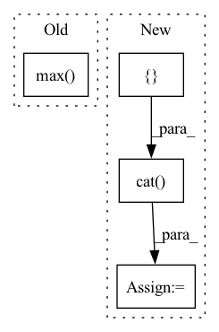

Pattern ID :10661
Before Change
predictions, lens = inputs
targets = batch.language_encoded.data
torch.max( targets)
// Concatenate labels (due to data augmentation)
// if stage == sb.Stage.TRAIN:
// targets = torch.cat([targets, targets], dim=0)
// lens = torch.cat([lens, lens], dim=0)After Change
// Concatenate labels (due to data augmentation)
if stage == sb.Stage.TRAIN:
targets = torch.cat([ targets, targets, dim=0)
lens = torch.cat([lens, lens], dim=0)
if hasattr(self.hparams.lr_annealing, "on_batch_end"):
self.hparams.lr_annealing.on_batch_end(self.optimizer)In pattern: SUPERPATTERN
Frequency: 3
Non-data size: 4
Instances Fragment ID: 36884679
Project Name: speechbrain/speechbrain
Commit Name: 549fb633ec46a66edc213cfbd37af6dada1fed29
Time: 2021-11-07
Author: parcollet.titouan@gmail.com
File Name: recipes/CommonLanguage/lang_id/train.py
M Class Name: LID
N Class Name: LID
M Method Name: compute_objectives(4)
N Method Name: compute_objectives(4)
M Parent Class: sb.Brain
N Parent Class: sb.Brain
M File Name: recipes/CommonLanguage/lang_id/train.py
N File Name: recipes/CommonLanguage/lang_id/train.py
M Start Line: 112
M End Line: 113
N Start Line: 102
N End Line: 112
Before Change
input dimensions: n_samples x time x variables
timesteps = x_cat.size(1) // encode + decode length
max_encode_length = int(encode_lengths.max() )
embedding_vectors = {int(i): emb(x_cat[..., int(i)]) for i, emb in self.input_embeddings.items()}
continuous_vectors = {
int(i): lin(x_cont[..., int(i)].view(x_cont.size(0), -1, 1)) for i, lin in self.input_linear.items()After Change
encoder_lengths = x["encoder_lengths"]
decoder_lengths = x["decoder_lengths"]
x_cat = torch.cat([ x["encoder_cat"], x["decoder_cat"], dim=1) // concatenate in time dimension
x_cont = torch.cat([x["encoder_cont"], x["decoder_cont"]], dim=1) // concatenate in time dimension
timesteps = x_cont.size(1) // encode + decode length
max_encoder_length = int(encoder_lengths.max()) Fragment ID: 36884677
Project Name: jdb78/pytorch-forecasting
Commit Name: bfd5feb8183d9ece59c1fd40054ef1ef7b8e789c
Time: 2020-07-14
Author: beitner.jan@bcg.com
File Name: pytorch_forecasting/models/temporal_fusion_transformer/__init__.py
M Class Name: TemporalFusionTransformer
N Class Name: TemporalFusionTransformer
M Method Name: forward(2)
N Method Name: forward(5)
M Parent Class: BaseModel
N Parent Class: pl.LightningModule
M File Name: pytorch_forecasting/models/temporal_fusion_transformer/__init__.py
N File Name: pytorch_forecasting/models/temporal_fusion_transformer/__init__.py
M Start Line: 373
M End Line: 383
N Start Line: 381
N End Line: 390
Before Change
seq_len = set2.size(0)
set1_centre = set1.mean(-1).view(-1, 1)
set2_centre = set2.mean(-1).view(1, -1)
distance = (set1_centre - set2_centre).pow(2).pow(0.5).max( -1) [0].max(-1)[0]
delta_list = [distance / np.sqrt(2 * (i + 1)) for i in range(kernel_num)]
bandwidth_list = [((2 * delta ** 2)).detach() for delta in delta_list]
return bandwidth_listAfter Change
def calc_bandwidth(first_kernel, third_kernel, kernel_num=20, max_scale=2.0, min_scale=0.1):
// * kernel: [batch_size, particle_num, particle_num]
kernel_mean = torch.cat([ first_kernel, third_kernel, dim=-1) .mean(-1).max(-1)[0]
particle_num = first_kernel.size(-1)
kernel_num
scale_list = list(np.linspace(min_scale, max_scale, num=kernel_num))
bandwidth_list = [(kernel_mean * scale).view(-1, 1, 1).detach() for scale in scale_list]
first_items = 0
third_items = 0
for h in bandwidth_list: Fragment ID: 36884684
Project Name: deligentfool/dqn_zoo
Commit Name: 1ac00bac8d92870064cdcf754b6e29278f14ae79
Time: 2020-11-04
Author: 1027660817@qq.com
File Name: MMD_DQN/mmd_dqn.py
M Class Name: AnonimousClass
N Class Name: AnonimousClass
M Method Name: calc_bandwidth(5)
N Method Name: calc_bandwidth(3)
M Parent Class:
N Parent Class:
M File Name: MMD_DQN/mmd_dqn.py
N File Name: MMD_DQN/mmd_dqn.py
M Start Line: 33
M End Line: 40
N Start Line: 18
N End Line: 33